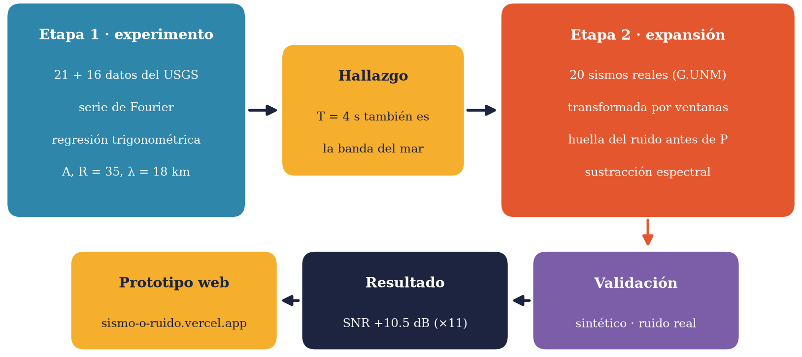
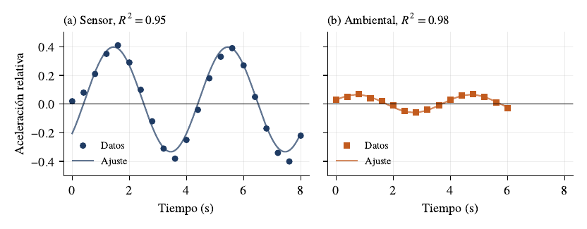
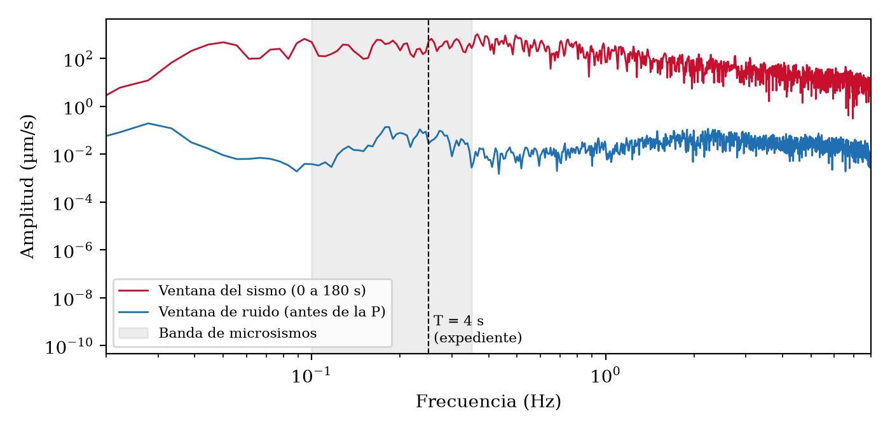
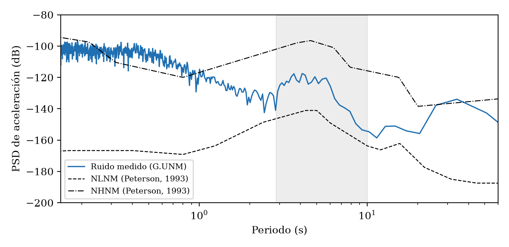
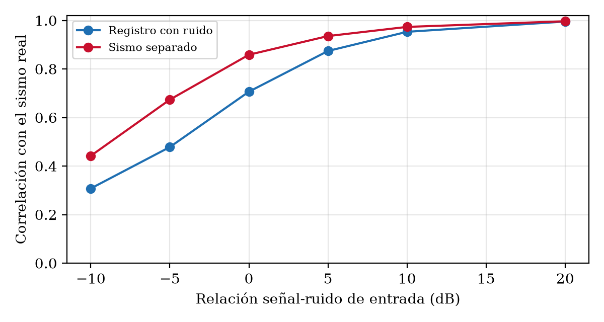
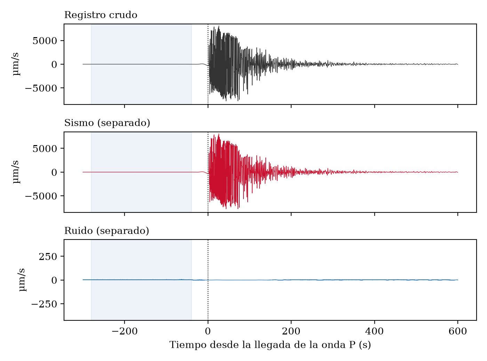
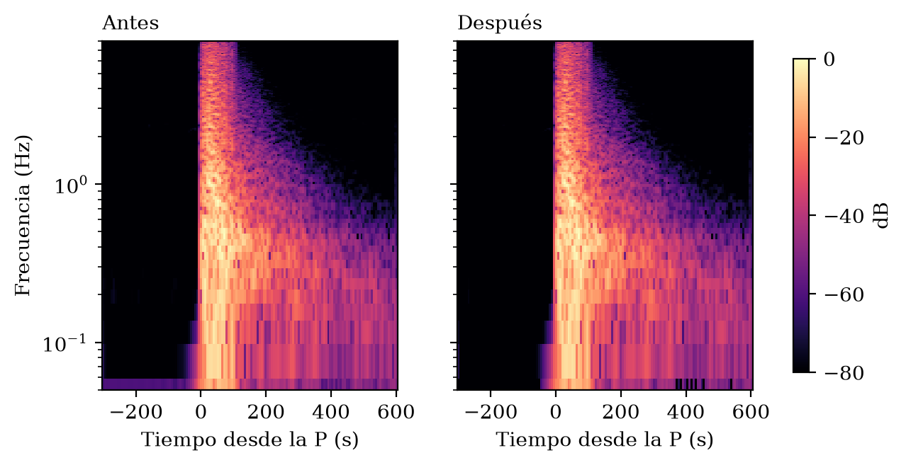
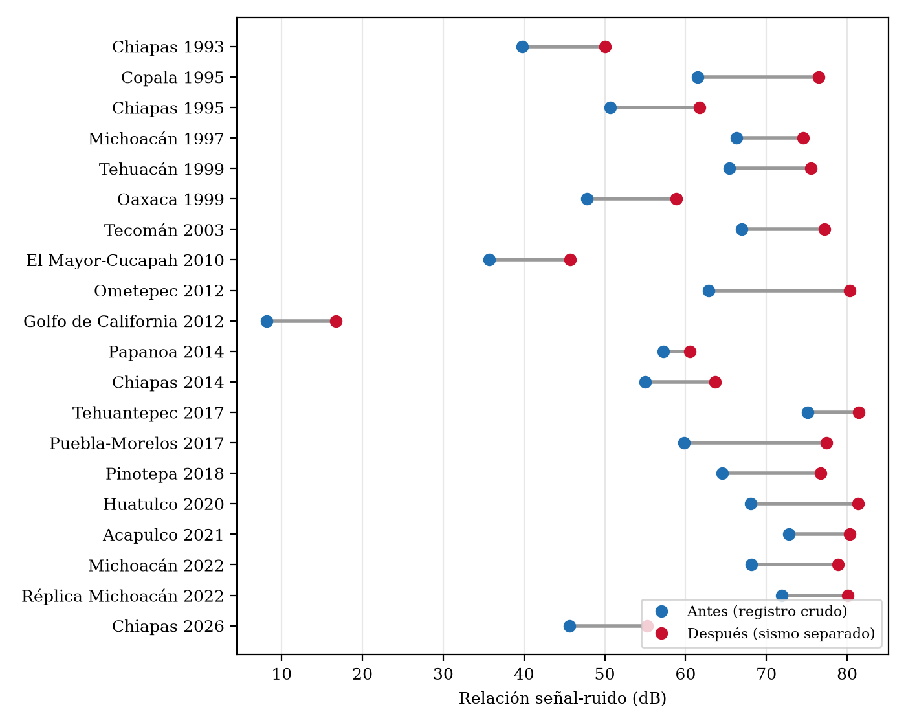
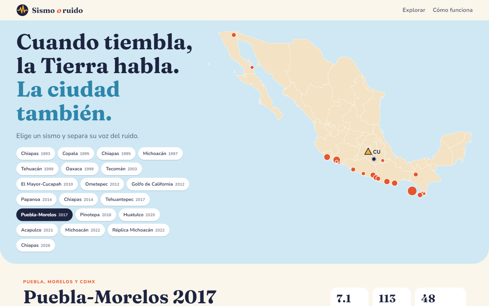
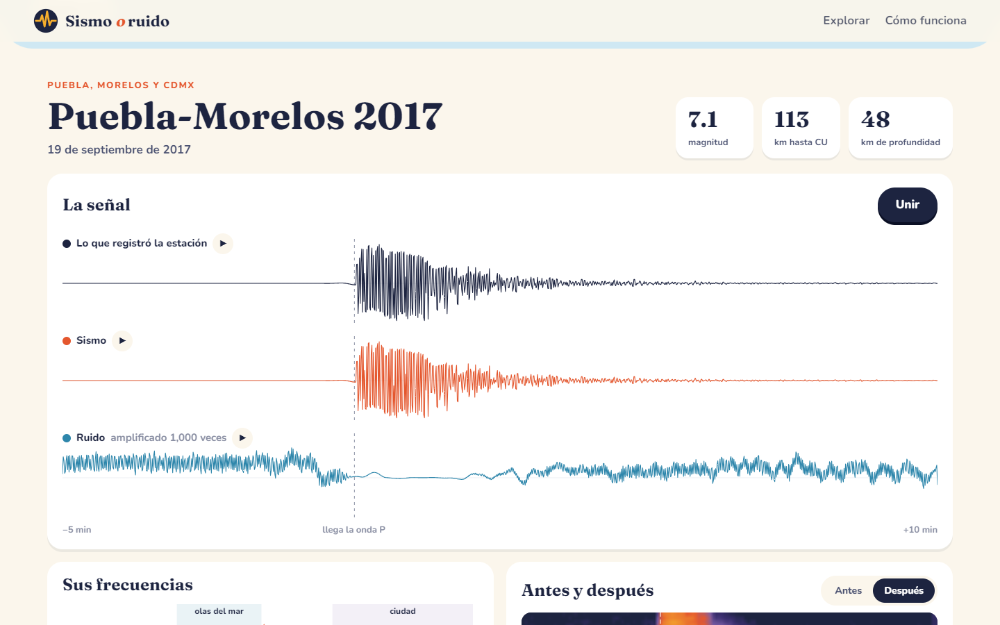

El problema
Un sensor sísmico mide la suma del sismo y del ruido del mar, el viento y la ciudad. Si la alerta confunde ruido con sismo, da una falsa alarma. Si el ruido tapa la onda P, el aviso llega tarde. Esto afecta más a las zonas con pocos sensores.
Objetivos e hipótesis
- Medir con la serie de Fourier y una regresión trigonométrica cuánta más energía tiene el sismo que el ruido.
- Extender el método a registros reales con la transformada por ventanas y medir la mejora de la relación señal-ruido.
- Validarlo y publicarlo en un prototipo web abierto.
H1. El sismo tiene mucha más energía que el ruido. H2. Restar el ruido previo a la onda P mejora la señal en todos los sismos.
Enfoque en dos etapas

La etapa 1 prueba el método en un caso controlado. Su límite motiva la etapa 2.
Los 20 sismos
Magnitudes de 6.8 a 8.2, entre 113 y 2156 km de Ciudad Universitaria.
Marco teórico
Serie de Fourier. Una señal periódica es una suma de ondas simples.
Transformada por ventanas. La misma serie, calculada en ventanas cortas de un registro largo.
Sustracción espectral (Boll, 1979). Se aprende el ruido antes de la onda P y se resta en cada frecuencia.
1Experimento controlado
Dos registros simplificados del USGS, uno cada 0.4 s. El sensor (21 datos) registra un sismo y el ambiental (16 datos) solo ruido.

| Sensor | Ruido | |
|---|---|---|
| Armónico dominante | T = 4.2 s · 94.8 % de la variación | |
| Amplitud A | 0.365 ± 0.021 | 0.062 ± 0.002 |
| Ajuste R² | 0.95 | 0.98 |
El hallazgo
El sismo tiene unas 35 veces más energía, pero los dos registros tienen el mismo periodo de 4 s. Ese es también el ritmo del oleaje, la banda de los microsismos (Peterson, 1993). La frecuencia sola no basta. Hace falta usar también el tiempo, y con datos reales.
Sismo y ruido en frecuencia

Puebla-Morelos 2017. El sismo está de 100 a 10 000 veces por encima del ruido, que tiene su propio pico en la banda del mar.
Ruido real en CU

El ruido de la estación G.UNM tiene un pico del mar en 3 a 10 s (mediana 6.4 s) y lo domina el ruido urbano por debajo de 1 s.
Validación con ruido real

Se suma ruido real a cada sismo limpio. Con ruido tan fuerte como el sismo, el parecido con la onda verdadera sube de 0.71 a 0.86.
2Expansión a 20 sismos reales
20 sismos de México (1993–2026, M ≥ 6.8), canal vertical de Ciudad Universitaria, datos del USGS y EarthScope.

Puebla-Morelos 2017 separado en sismo y ruido.


Prototipo Sismo o ruido


Elige un sismo, sepáralo con un botón, mira sus frecuencias y escúchalo. Gratis y sin inteligencia artificial.
Conclusiones
- La serie de Fourier mide la diferencia de energía. El límite de 4 s mostró que hace falta el tiempo.
- La transformada por ventanas con sustracción espectral mejora la señal en todos los sismos reales.
- Un método ligero y abierto acerca las alertas a donde hay menos sensores (ODS 9 y 11).
Impacto e inclusión
Corre en segundos en una computadora común, sin entrenar modelos. Puede ser un primer filtro en estaciones rurales con poco cómputo. El prototipo explica con imágenes y sonido cómo se reconoce un sismo, para que más personas entiendan y confíen en la alerta.